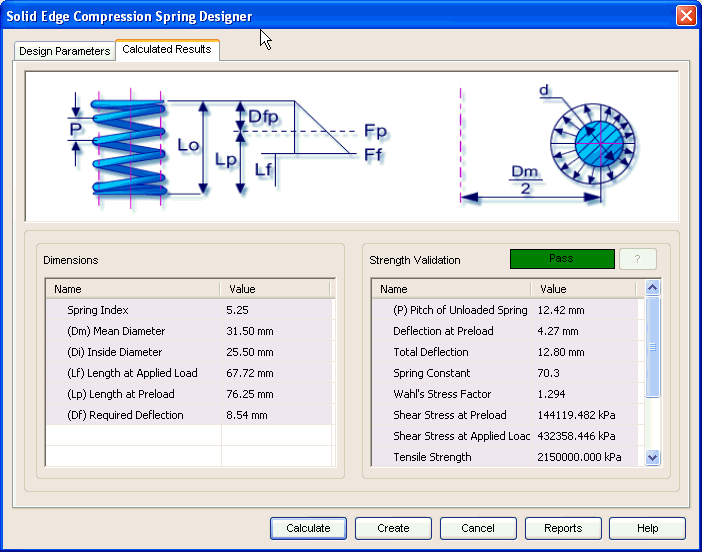

Compression Spring Calculated Results tab
The Calculated Results tab provides the options you use to view results of calculation. This tab has 2 areas:

Dimensions
Displays the input provided for calculation and a few general results for the compression spring.
Strength Validation
Displays the overall performance of the compression spring in terms of Pass/Fail. You can also review the allowable stresses of the spring displayed in this area.
Learn more
Compression Spring moduleUsing the Compression Spring module
Compression Spring Design Parameters tab
Compression Spring Material selection
Compression Spring tutorial
How to (Compression Springs)
Frequently asked questions (Compression Springs)
Standards used for Compression Spring calculations